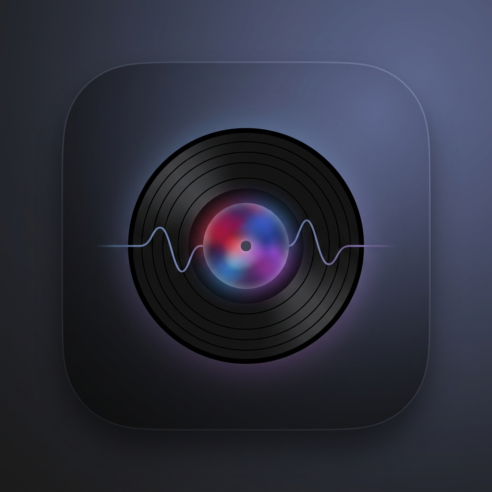

V-Art PrivacyPrivacy Policy
V-Art Mobile Privacy Policy
Effective date: July 20, 2026
V-Art Mobile helps identify music playing nearby and displays related artwork, lyrics, song details, and concert information.
Information the App Uses
Microphone Audio
V-Art Mobile uses the device microphone only after you grant microphone permission. Microphone access is used to identify music playing nearby through ShazamKit.
The app does not intentionally record, save, or store raw microphone audio in its own local database.
Recognized Song Information
When a song is recognized, the app may use song information such as title, artist, album, artwork URL, Shazam ID, Apple Music ID, ISRC, match offset, and duration.
This information is used to display the now-playing screen, fetch album artwork, fetch lyrics, fetch song details, search for related concerts, and store recognized song metadata locally so the app can reuse details when possible.
Local Recognition Cache
V-Art Mobile stores recognized song metadata locally on your device using Apple's SwiftData storage. This cache may include recognized song title, artist, identifiers, artwork URL, and the time the song was recognized.
The current app does not sync this cache to V-Art servers.
Country Selection for Concert Search
The app stores a selected country code to search for concerts. It does not currently request precise location.
Third-Party Services
V-Art Mobile uses third-party or platform services to provide app features:
| Service | Purpose | Data sent |
|---|---|---|
| Apple ShazamKit | Music recognition | Audio/signature data handled by ShazamKit for recognition. |
| Apple iTunes Search/Lookup | Song metadata, duration, links, and album information | Song title, artist, Apple Music ID, and locale country when available. |
| Musixmatch API | Lyrics lookup | Song title and artist. |
| Wikipedia REST API | Artist summary | Artist name. |
| Ticketmaster Discovery API | Concert/event lookup | Artist name and selected country code. |
These services process data under their own terms and privacy policies.
Tracking and Advertising
The current app does not include advertising SDKs and does not use data to track you across apps or websites owned by other companies.
Data Sharing
V-Art Mobile does not sell personal information. The app sends the limited data described above to third-party services only to provide recognition, lyrics, metadata, artist-summary, and concert-search features.
Data Retention
Recognized song metadata used for local caching remains on your device until you delete the app or the app's local data is removed by the operating system. Network service providers may retain request data according to their own policies.
Your Choices
- Deny or revoke microphone access in iOS Settings.
- Stop listening inside the app.
- Delete the app to remove local app data from the device.
Children's Privacy
V-Art Mobile is not intended to collect personal information from children. The app's core functionality is music recognition and related metadata display.
Changes to This Policy
This policy may be updated as the app changes. The effective date will be updated when changes are published.
Contact
For privacy questions, contact v-art.scoured224@passmail.net.